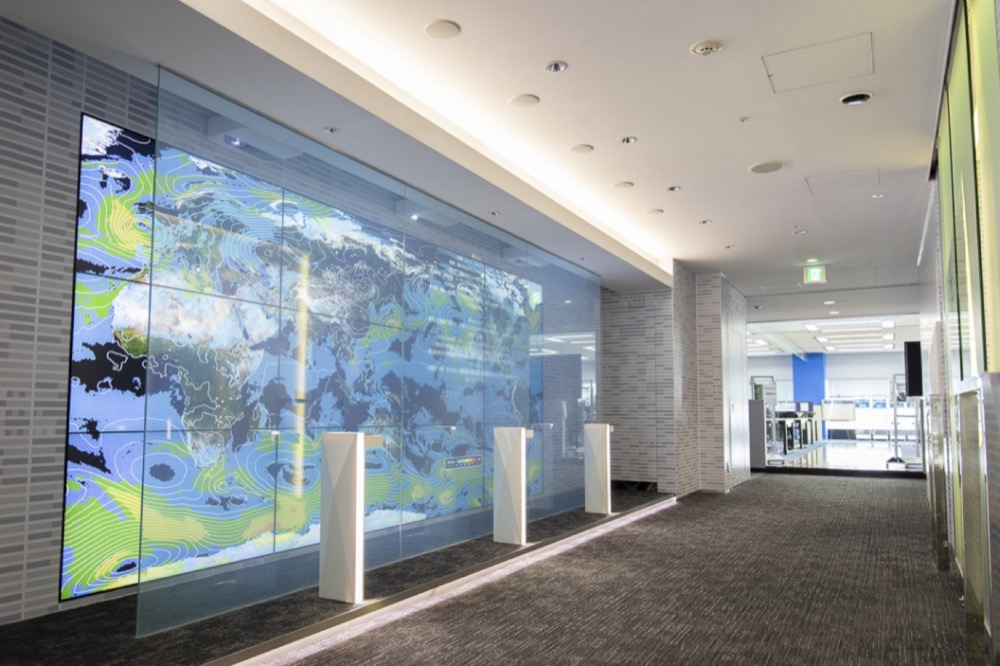
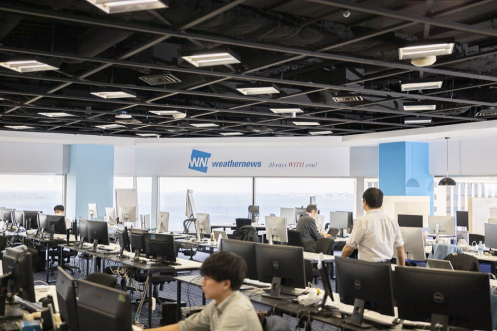
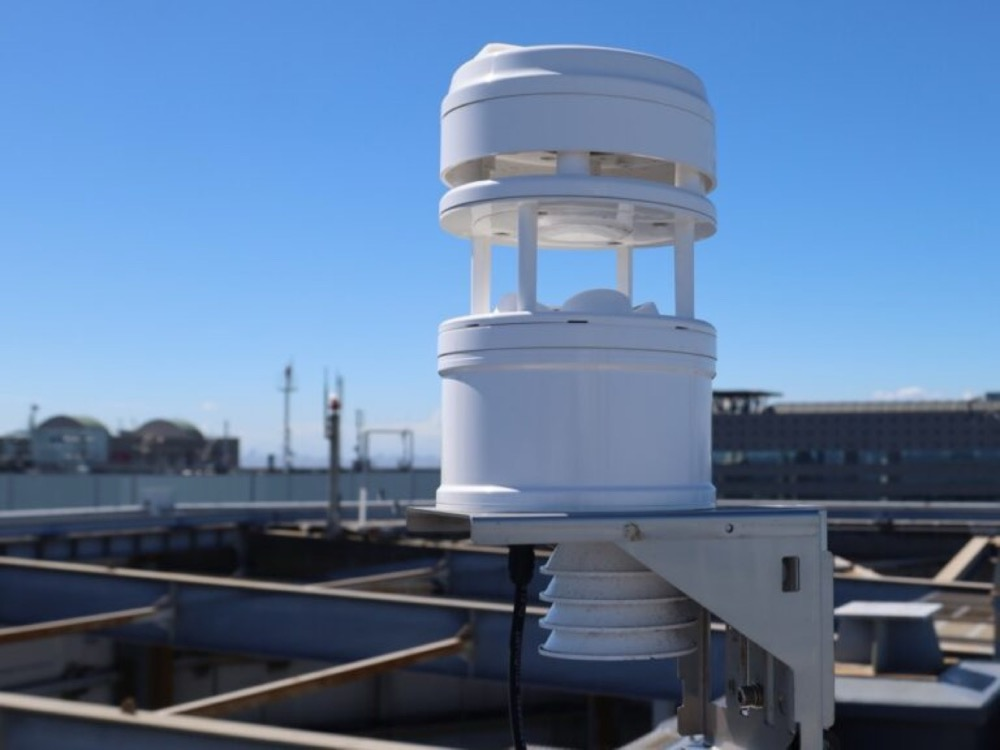
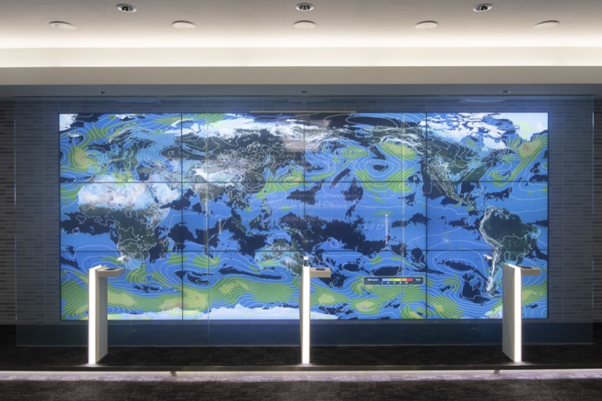

TRACK 01
千葉が誇る世界最大規模の民間気象情報会社

海に面した千葉市美浜区に本社・グローバルセンターを置く株式会社ウェザーニューズは、世界初、そして世界最大規模の民間気象情報会社である。日本国内の主要な天気予報の中で予報精度No.1を2年連続で獲得してきた実績を持ち、10分間隔で業界最長の30時間先まで表示可能な超高解像度の「雨雲レーダー」など人気コンテンツが充実している。2021年のNHK連続テレビ小説「おかえりモネ」では台本考証および美術協力に携わっており、気象予報士の社会的ニーズにも多大なる影響を与えていたのは記憶に新しい。
気象庁が管理している1,300ものアメダスの約10倍の観測網を持っており、さらに取得したデータをより実践的に活用できるように独自のロジックを組んでいる。例えば停電が発生したとき、停電したエリアと停電時の気象情報とをAIで分析し、分析結果と今後の停電予測地域がわかるようにしているという。
「いざという時、人の役に立ちたい」を合い言葉に、世界約50カ国の顧客へ24時間365日、気象に関するさまざまなリスクコミュニケーションサービスを行っているウェザーニューズ。こと近年さらなる猛威を振るっている台風やハリケーン、そして豪雨による洪水の増加など、災害リスクへの対策がより重要なテーマとなってきている昨今、世界最大各地で発生する気象現象を正しく把握するための独自の観測インフラの開発や、各国の気象・地象リスクを深く理解するための研究に日夜取り組んでいる。
TRACK 02
気象情報を肌で感じられる海浜幕張

株式会社ウェザーニューズは1970年1月に発生した福島県沖の海難事故から生まれた、創業者・石橋博良の「船乗りの命を守りたい」という熱い使命が創業のきっかけとなり、1986年に設立。海から始まった気象サービスの市場は、空そして陸へと様々なニーズへ拡大していくこととなる。
今や世界規模で活躍中のウェザーニューズ。グローバルセンターとして位置づけている本社は、幕張メッセやZOZOマリンスタジアムなどがある幕張新都心にある。海浜幕張は東京湾に面しているだけでなく、高速道路や鉄道がすぐ近くを通っており、成田空港、羽田空港といった大規模な国際空港にもアクセスしやすい。ウェザーニューズのクライアントである交通事業者が今どのような気象の影響を受けているかを肌で感じながらサービスを提供できる環境であることから、海浜幕張を選択したという。


TRACK 03
止まらない快進撃を支える社員の存在
現在、会社全体では1,100名規模になっているウェザーニューズ。一般向けのお天気アプリ「ウェザーニュース」は累計3,700万ダウンロード（2024年3月時点）を突破し、YouTubeのチャンネル登録者数は118万人を記録。法人としては国内の主要な交通インフラ企業のほとんどと連携しており、各企業向けにカスタマイズされた気象情報をリアルタイムに提供している。
最近ではサービスコンテンツ自体の開発スピードを上げ、より世の中に新しいコンテンツを出していく方針を取っており、システム開発に必要な人材も新卒・中途問わず積極的に採用しているという。
今回インタビューに応えてくれた竹本さんは大学で地質学を専攻していたが、減災や防災に役立つ人材になりたいと考えウェザーニューズに入社。各クライアントの事業に最も適した気象情報を提供する営業活動を経験し、現在は広報担当としてより多くの方々にサービスを知ってもらうよう、さまざまな取り組みに挑戦している。